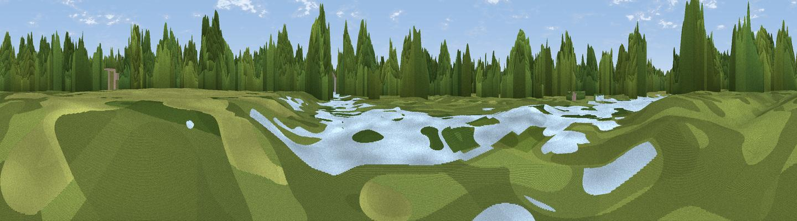

Muntjac Point
#45964 in England · top 100% of its area beats it · near South HinkseyWhere it is
The exact computed spot (SP 52272 04714). Click the marker for map links.
The view, rendered

A 360° render of this exact spot computed from the terrain model, tree cover and land cover — summer colours, afternoon light, calibrated against photographs of famous viewpoints. Real trees, hedges and buildings will differ in detail.
The panorama
Grey silhouette: terrain skyline in each direction (720 bearings, Earth curvature and refraction included). Dashed green: skyline with trees (+15 m) and buildings (+8 m) as obstacles. Blue strip: how far the ground is visible on each bearing.
Where the view opens
Wedge length = distance to the farthest visible ground on that bearing (vegetation-aware). Rings at 10, 25 and 50 km.
What fills the view
62% woodland · 22% grassland · 12% built-up · 3% cropland · 1% water
Angular shares of the visible panorama (visual magnitude), not map area. Landscape diversity 0.45 (0–1 Shannon).
Key numbers
More beautiful places nearby
The staircase of upgrades: each row has a higher view potential than everything closer. Driving times are estimates from straight-line distance, calibrated against real road routing — check an actual route before setting out.
| Place | Direction | Drive | Score |
|---|---|---|---|
| Viewpoint near Oxford | NE · 2 km | ~5 min | 17.9 |
| Viewpoint near Sunningwell | SSW · 4 km | ~9 min | 36.7 |
| Millennium Beacon | W · 4 km | ~9 min | 47.1 |
| Thorn Hill | ENE · 5 km | ~11 min | 54.1 |
| Viewpoint near Swinford | WNW · 8 km | ~16 min | 64.2 |
| Round Hill | SSE · 13 km | ~24 min | 70.1 |
| Viewpoint near Watlington | ESE · 21 km | ~35 min | 70.6 |
| Viewpoint near Lewknor | ESE · 21 km | ~36 min | 70.8 |
51.73870, -1.24439 · source: osm viewpoint · position refined by local search. Computed location — check access rights before visiting.